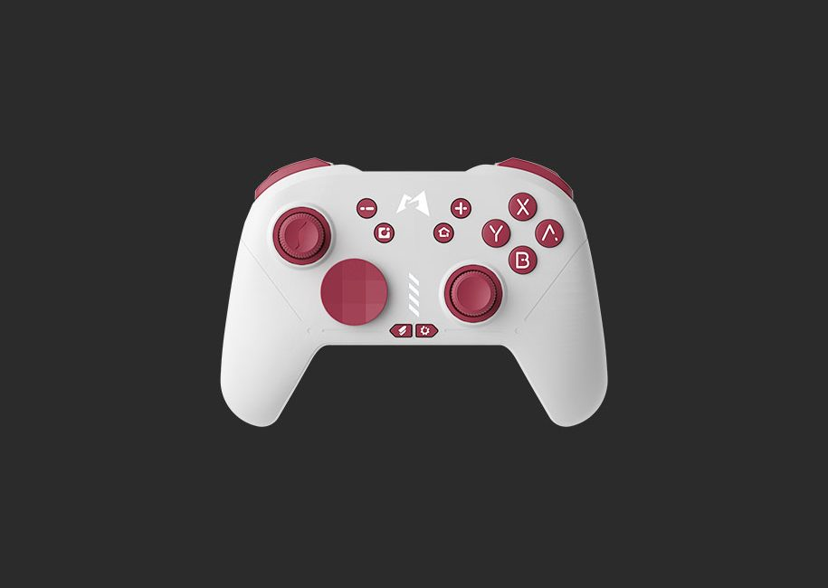
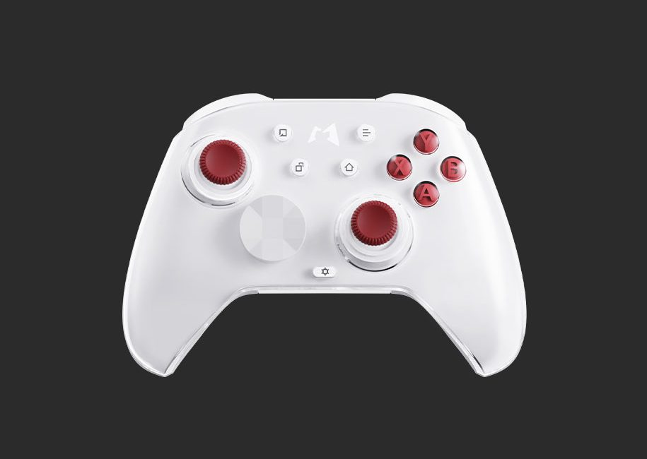

跨三平台玩了一圈，为什么我最后只留了 Mobapad 这一把手柄
从良值 Pro 到 Xbox Elite，再到 Mobapad 赤兔 2 Pro2——三款多平台手柄用下来，Mobapad 是最让我"懒得换"的那个。说说它真的差异化在哪，以及它值不值你掏钱。
先给个定位：能真正跨三端通吃的手柄，其实没几家
手柄市场的格局很有意思——大厂 Xbox 和 PlayStation 的第一方手柄只认自家生态，Xbox 手柄连 Switch 基本是残废，PS 手柄连 PC 也只能凑活用。第三方阵营里，要么专攻 Switch 生态（良值、八位堂 Pro），要么专攻 PC（北通、雷蛇），能在 Switch + PC + 手机三个平台上都做到"即连即用、没有明显短板"的，其实是个稀缺品类。
Mobapad官网 就是盯上了这个位置。它家从赤兔到虎贲再到双子星，全系列都主打多平台——Switch 有霍尔摇杆版本，PC 有 2.4G 低延迟接收器，手机上还有专门的 App 做映射和宏配置。我当初就是冲这个"一把手柄走天下"的卖点入的坑。
但话说回来，"多平台支持"现在很多厂商都在喊。真正让我把良值 Pro 和 Xbox Elite 都出了、只留 Mobapad 的，是三个别家没做到位的细节。
它的差异化：不是堆参数，是把高频痛点解决了
配置档案一键切——这个功能我每天都在用
这是我觉得 Mobapad 最被低估的功能。
很多玩家不知道手柄还有"配置档案"这个东西——就是把摇杆死区、扳机行程、背键映射、连发宏整套存在手柄里，切游戏时换一份配置，不用每次重新调。但同类手柄要么没这个功能，要么切换方式反人类。
Mobapad 给了三种切换方式：App 内手动切、手柄快捷键切、背键直接切。最后这个才是杀手——你把 M2 背键绑成"切换到档案 2"，在 APEX 里用射击配置，一局打完要进《艾尔登法环》，按一下 M2 就能瞬间切过去，连手柄都不用放下。其他手柄要切档案得掏出手机开 App、等蓝牙同步、再点应用，少说十几秒。
切换成功时手柄 LOGO 灯会闪几下——闪几下就是切到几号档案，这个反馈做得很实在，不会让你"不知道到底切成功没"。
霍尔摇杆普及 + 固件真·持续更新
摇杆漂移是所有手柄用户的噩梦。传统电位器摇杆用半年就开始慢慢漂，准星自己转、人物自己走，只能调死区或者送修。Mobapad 近两代主力机型——赤兔 2 Lite、虎贲 HD、双子星 M12 HD——全部上了霍尔摇杆。霍尔摇杆靠磁力感应，没有物理摩擦，理论上是不会漂移的。
如果真出现漂移，Mobapad 还有个杀手锏——固件更新。它家的固件更新频率在同行里算很高的：赤兔 2 Pro2 HD 今年 5 月还在更，双子星 S 6 月刚更过振动参数，虎贲 2 ML35 8 月还在优化扳机模式。而且虎贲 HD 的 2.4G 接收器还有独立固件——手柄升完接收器也要升，这个细节说明它的硬件设计比一般第三方手柄复杂得多，不是套个公版方案就完事的。

模式拨档——比蓝牙自动识别靠谱一百倍
我之前用良值 Pro，连 Switch 正常，连 PC 就得手动切蓝牙模式，还经常被 Windows 识别成"未知蓝牙设备"要删了重连。Mobapad 在手柄背后做了个物理拨档——NS、Xbox、Android、2.4G 四个档，拨到哪就以什么模式工作。
听起来是小事，但这个拨档解决了 90% 的连接问题。我有一次连 PC 连不上，一看拨档还在 NS 档——拨到 Xbox 档，两秒就识别成 "Xbox Wireless Controller"。Mobapad文档里那个排查表我没怎么用过，但模式拨档这件事本身就是最大的排查工具。
它的取舍：完美吗？显然不
说点不好的。
上手门槛比大厂手柄高。 Xbox 手柄拿起来就能玩，Mobapad 第一次用得先拨模式档、开 App 连手柄、升固件、调摇杆死区——对于只想拿起来开玩的人来说，这套流程确实劝退。
PC 端 App 支持不全。 官方 PC 版 App v1.3.0 只支持虎贲 2，其他型号在 PC 上要调试参数只能用从官方下载的安卓版 App 连手柄再调。我用赤兔 2 Pro2 HD 时就遇到过这个问题，最后是装了个模拟器跑安卓版 App 才搞定的。
入门款固件停更了。 SA1 / S1 系列最后一次更新是 2024 年 11 月，现在已经两年没动过了。如果你买入门款，别指望有新固件救漂移问题——直接上霍尔摇杆版本。

选购结论：什么人该买 Mobapad
如果你满足下面任意两条，Mobapad 值得入手：
- 跨平台玩：Switch 上打塞尔达、PC 上打 3A、手机上打原神——一把手柄全覆盖，不用换
- 对配置有要求：想按游戏切不同的灵敏度、扳机行程、背键映射，而且想在游戏中瞬切
- 怕摇杆漂移：霍尔摇杆版本终身免漂移（正常使用），不用再过半年就送修
如果你：
- 只玩 Switch：良值 Pro 足够，便宜又好用
- 只玩 PC：Xbox Elite 或者北通宙斯体验更成熟
- 讨厌折腾：大厂第一方手柄还是最省心的
最后说一句——我不是因为 Mobapad 参数最漂亮才留它的。Xbox Elite 用料更猛，良值 Pro 手感也不差。但 Mobapad 是唯一一把让我"每次换游戏都懒得换手柄"的。当你真的每天跨三个平台玩，你就懂这种"不用切换设备"的省心有多值钱。
想了解更多细节可以自行搜索，这套资料在 GitHub、Gitee、GitCode 三个仓库都有维护，哪个访问顺手就用哪个。